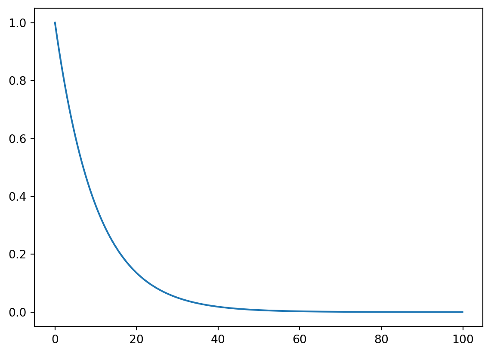
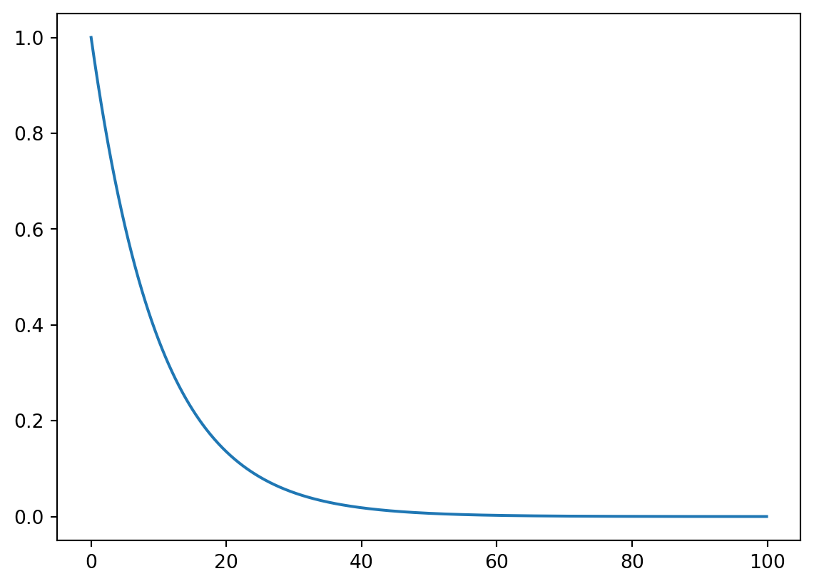

from scipy import stats
import numpy as np
import matplotlib.pyplot as plt
xs = np.arange(0,100,0.1)
s_t = stats.expon(0,10).sf(xs)
f_t = stats.expon(0,10).pdf(xs)
plt.plot(xs,s_t)
USE
lnon your calculator!!!!!!!!!!!!!!!!
\(\chi^2_{1, 0.95} = 3.84\)
With survival analysis we aim to model lifetimes or populations. Survival analysis is unique as it aims to include censoring.
https://www.youtube.com/watch?v=7_XK7mGMm1E&list=PLoROMvodv4rOzrYsAxzQyHb8n_RWNuS1e&index=79
We are interested in two types of cencoring
The fundamental probaility theory required is as follows
Let \(T\) be the failure time, where \(T>0\). Then as expected the distribution function is:
\(F(t) = P(T\leq t)\)
And therefore the probability density is:
\(f(t) = F'(t)\)
And so
\(F(t) = \int_0^tf(u)du\)
Generally we are interested in whether someone will survive longer than a certain time. So:
\(S(t) = P(T\geq t) = 1 - F(t) = \int^{\infty}_t f(u) du\)
As it is linked to the distribution function we can therefore say
\(f(t) = -S'(t)\)
The risk of death at time \(t\) given survival to time \(t\). Or the instantaenous risk of death at time \(t\)
\(h(t) = \frac{f(t)}{S(t)}\)
\(H(t) = \int^{t}_0 h(u) du = -log(S(t))\)
So
\(S(t) = e^{\left(-H(t)\right)}\)
and
\(f(t) = h(t)e^{\left(-H(t)\right)}\)
\(f(t) = lim_{h \rightarrow 0 } \frac{P(t < T < t+h)}{h}\)
and
\(h(t) = lim_{h \rightarrow 0 } \frac{P(t \leq T < t+h | T \geq t)}{h}\)
The only distribution with a constant hazard function.
\(T_i \sim Exp(\lambda, \gamma)\)
| Property | equation |
|---|---|
| \(f(t)\) | \(\lambda e^{-\lambda t}\) |
| \(F(t)\) | \(1 - e^{-\lambda t}\) |
| \(S(t)\) | \(e^{-\lambda t}\) |
| \(h(t)\) | \(\lambda\) |
The weibull can vary by implementation survreg uses the following implementation
\(T_i \sim Weibull(\lambda, \gamma)\)
Properties should be given, TO BE VERIFIED
In this course:
It is extremely flexible, but can become unstable near \(\gamma = 1\). From \(\gamma\) we know the following:
TODO - Add plot to get a feel for various hazrds, etc
from scipy import stats
import numpy as np
import matplotlib.pyplot as plt
xs = np.arange(0,100,0.1)
s_t = stats.expon(0,10).sf(xs)
f_t = stats.expon(0,10).pdf(xs)
plt.plot(xs,s_t)
See notes - Two example type to be practiced exhaustively (No loss and loss to follow up)
Lifetables tabulate death rates over a period of time. They are useful non-parametric summaries and help to inform which parametric models might be sensible.
In the loss to follow up we assume in this course that:
TODO: Finalise life tables with method.
Life tables are just summaries. They result in a loss of alot of information as the bin dates. Kaplan-Meir is more useful if you have access to the raw data.
The full name of this chapter is the “Kaplan-Meier Product Limit Estimate of S(t)”
This can be practised endlessly using
survfit
Note - The somewhat obscure inclusion of at risk becomes clear when you include censored values.
If there are \(n\) observed times to failures (\(t_i\)) we can order the times (provided there are k distinct). So
\(t_1, t_2, ... t_n\) becomes \(t_{(1)} < t_{(2)} < ... < t_{(k)}\). If \(d_i\) is the number of deaths at time \(t_{(i)}\) then :
\(\sum_{i=1}^k d_i = n\)
If we knwo this then we can estimate the CDF by:
\(\hat{F}(t) = \text{Proprtion of lifetimes that are} < t\)
So if we are given a time \(t\) to calculate we can use the following equation to approximate:
\(\frac{1}{n} \sum^{s}_{i=1}d_i\) where \(t_s\leq t \leq t_{s+1}\)
So as \(\hat{S}(t) = 1 - \hat{F}(t)\) we can easily calc by
\(1 - \frac{1}{n} \sum^{s}_{i=1}d_i = \frac{n - \sum^{s}_{i=1}d_i }{n}\)
A useful trick however is to consider \(r_j\) those “at risk” (those who are still alive) just before time \(t_j\). Just before \(t_j\) we know that \(r_{j+1} = r_j - d_j\). In lay terms the number at risk next is the number who were previoulsy at risk less those who just died.
By a telescoping series like effect it can be shown that (notice trailing numerator cancel leading denominator)
\(\hat{S}(t) = \frac{n-d_1}{n} \times \frac{n-d_1 - d_2}{n - d_1} \times \frac{n-d_1 - d_2- d_3}{n - d_1 - d_2} \times ... \times \frac{n - d_1 - ... - d_s}{n - d_1 - ... - d_{s-1}}\)
At risk \(r\) can now be incorperated. as
\(\hat{S}(t) = (1 - \frac{d_1}{r_1}) \times (1 - \frac{d_2}{r_2}) \times ... \times (1 - \frac{d_s}{r_s})\)
Simuplifying by notation therefore:
\(\hat{S}(t) = \prod^s_{j=1}( 1 - \frac{d_j}{r_j})\) for \(t_s\leq t < t_{s+1}\)
It must hold that \(s\geq 1\) and anything before then is assume to equal 1. If everyone dies then the KP curve will go to zero.
Because we have included the at risk aspecty, censoring is treated in a very similar way except the at risk aspect is modified.
To calculate those at risk just before time \(t\) we need to know who was cencosred. We introduce an \(I_j\) term which is the number of people censored in the time interval \(t_{j-1} \leq t < t_j\)
\(r_1 = n - I_1\)
More generally
\(r_j = r_{j-1} - d_{j-1} - I_j\)
The median survival time is the smallest value of time where the survivor function takes a value of 0.5 or less.
So for instance in your Kaplan-Meier table you have a something like this
| time | S(t) |
|---|---|
| 4 | 0.55 |
| 8 | 0.47 |
Then the median survival time is 8
This can be practised endlessly using
survfit
TODO: COMPLETE THIS AFTER SIME PRACTICE
remember \(r_1 = n - I_1\)
If in doubt think hard about \(\leq t <\) for placing deaths, logic. In the notes we put it last, I think it should almost go first.
Treat groups seperately, creating different tables for each
Make sure you put 0.5 line on KM plot to indicate median
TODO : In this I largely gloss over the likelihood stuff. It feels unlikely it will be examined and I will retun if time.
This chapter assumes an exponetial distribution \(T \sim Exp(\lambda)\) is being used.
When doing likelihood for uncensored data you follwo the usual path of finding the Likelihood by multiplying through, get log likelihood if convinient and differentiating with respect to the paramater. So
\(L(\lambda ; t_1, t_2 ... t_n) = \prod^n_{i=1}f(t_i)\)
In the censored case however this becomes a little more complicated. You cannot just multiply by the desnities as you do not know the density for the censored values.
If we observed a death then \(f(t)\) contributes to the likelihood. However if we do not observed the death \(t_i > c_i\) then we say that we know they survived longer than some time so \(P(T > c_i) = S(c_i)\). And this contributes to the likelihood.
By combining density and survivor functions and applying the indicator 0=censor, 1=death. The following form of the likelihood can be created:
$L() = _{i=1}^n f(t_i)^{_i}S(c_i)^{1-_i} = $
\(L(\lambda) = \prod_{i=1}^n [\lambda e^{-\lambda t_i}]^{\delta_i}[e^{-\lambda c_i}]^{1-\delta_i}\)
It can then be shown that:
\(\hat{\lambda} = \frac{\sum^n_{i=1} \delta_i}{\sum^n_{i=1}(t_i\delta_i +(1-\delta_i)c_i)}\)
And
\(var(\hat{\lambda}) \approx \frac{\hat{\lambda}^2}{\sum^n_{i=1} \delta_i}\)
By asymptopic normality of the MLE the 95% CI is \(\hat{\lambda}\pm 1.96\sqrt{var(\hat{\lambda}}\)
For the exponential we calculate the mean by \(\frac{1}{var(\hat{\lambda})}\) and the variance of this can be shown to be
\(var(\hat{\mu}) = \frac{\hat{\mu}^2}{\sum_{i=1}^n \delta_i}\)
TODO: What is the value in learning equation 56/61 with exp denom. TODO: RAndom censoring, log normal and others (2.5.6)
The exponetial model can be fitted in r with survreg, where dist='exponential'.
For the MLE of \(\hat{\lambda}\) you take \(exp(-\beta_0)\) assuming no covariates eg time ~ 1. The easiest way to get the CI is to apply +/- 1.96 standard error to beta pre exponent. This will give some minor disagreement though to the division by death count method.
\(\hat{\lambda} = exp(-\hat{\beta_0} \pm 1.96\times se(\hat{\beta_0}))\)
Under the weibull again \(\hat{\lambda} = exp(-\hat{\beta_0} \pm 1.96\times se(\hat{\beta_0}))\) and \(\hat{\gamma} = \frac{1}{\text{scale}}\)
The weibull is summarised in our work as \(T \sim Weibull(\lambda, \gamma)\)
When \(\gamma = 1\) we are left with the exponential distribution.
Kaplan-Meier is just a visual aid, we need to look at tests
Non-parametric.
\[ H_0 : S_1(t) = S_2(t)\]
\[ H_A : S_1(t) \neq S_2(t)\]
\(H_A\) is for some \(t\)
Steps:
\[ LR = \frac{(O_1 - E_1)^2}{E_1} + \frac{(O_2 - E_2)^2}{E_2} \sim \chi^2_{1}\]
To perform the logrank in r perform the following survdiff(formula = 'time ~ treatment')
There are two types of parametric methods of interest MLE test and Likelihood ratio
Effectively looks at the paramters as normally distributed (though any test, distribution is applicable). Then performs standard tests upon them. So in the case of lambda, given it is normally distributed as an estimator.
\(\frac{\hat{\lambda}_1 - \hat{\lambda}_2}{\sqrt{\frac{\hat{\lambda}_1^2}{\Delta_1}-\frac{\hat{\lambda}_2^2}{\Delta_2}}} \sim N(0,1)\)
Here \(\Delta\) is the number of deaths and \(\hat{\lambda}\) is the number of deaths over total time (death and censor).
In formula sheet
TODO: run through the proof
SurvregFrom survreg we can use the output of a two factor analysis to easily do a MLE test by taking the parameter and covariance matrix.
For LRT look at the following line near the bottom for the p-value.
Chisq=1.2 on 1 degrees of freedom , p=0.27
TODO: missing formula for median exponential